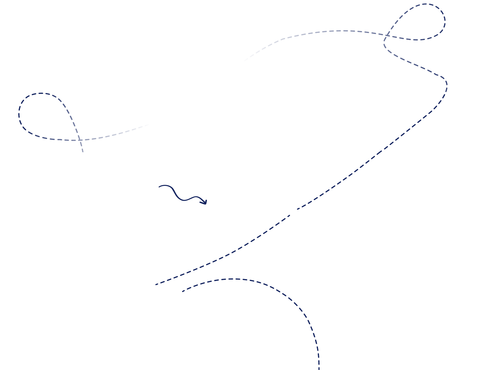

Немецкий для жизни в Германии и Австрии
Школа с преподавателями-лингвистами
Чтобы понимать носителей, говорить уверенно и решать вопросы без стресса
Мы поможем тебе, если ты
Получаешь отказы по работе из-за немецкого, даже если подходишь
Хочешь идти на экзамен с уверенностью
Прокручиваешь все диалоги в голове и устаешь от постоянного напряжения
Понимаешь отдельные слова, но смысл угадываешь из контекст
Готовишься к переезду в немецкоговорящую страну
Хочешь наконец чувствовать себя на равных с местными
Мы поможем тебе, если ты

Получаешь отказы по работе из-за немецкого;
Хочешь идти на экзамен
с уверенностью

Готовишься к переезду или уже живёшь в Германии и Австрии
Получаешь отказы по работе из-за немецкого;
Хочешь идти на экзамен
с уверенностью
Готовишься к переезду или уже живёшь в Германии и Австрии

Как выглядит обучение на практике
Как выглядит обучение на практике
До начала обучения мы определяем ваш уровень, реальные сложности и цель, к которой вы хотите прийти. Вы понимаете, где вы сейчас и зачем начинаете.
Программа строится под вашу задачу: жизнь, работа, экзамен, переезд или уверенность в общении. Мы сразу ориентируем по примерным срокам и этапам.
Занятия проходят на немецком языке. Мы учим думать на немецком, а не переводить в голове, и помогаем заговорить спокойно и уверенно.
Все материалы, задания и практика собраны
на удобной платформе и в приложении.
Вы видите структуру обучения и можете возвращаться
к материалам между занятиями.
Диалоги, звонки, бытовые ситуации, работа и экзамены — немецкий начинает работать вне уроков, а не только во время занятий.
Каждое занятие встроено в общую логику:
понятно, что уже сделано и к чему мы идём дальше.
Как начать обучение?
На пробном занятии мы:
 01
01

определим твою точку А
 02
02
разберем цель и сложности
 03
03
предложим программу,формат и примерные сроки обучения
Форматыобучения
Индивидуальные занятия
Онлайн Очно в ВенеНемецкий под ваш запрос и цель
Подойдет, если вы хотите быстрый и понятный результат, без потери времени на лишнее.
Работаем индивидуально – под вашу задачу: общение, работа, экзамены
или повышение уровня.
Программа, темп и формат подбираются под вас.
Помогаем выстроить систему в языке и довести до результата без хаоса.
 Сроки: зависят от цели (обсуждаем на пробном),
обычно от 2 месяцев
Сроки: зависят от цели (обсуждаем на пробном),
обычно от 2 месяцев
Индивидуальные занятия
ЦИФРЫEUR
Купить за ЦИФРЫ EURГрупповые занятия
Онлайн Очно в ВенеНемецкий в группе
Немецкий в группе с системным подходом Подойдет, если вам важен максимальный фокус на говорении и реальном общении.
Занятия в небольших группах с фокусом на речь, новый вокабуляр и живое взаимодействие.
Вы учитесь говорить, слушать и реагировать в ситуациях, приближенных к жизни.
 Сроки: зависят от цели (обсуждаем на
пробном),
обычно от 2 месяцев
Сроки: зависят от цели (обсуждаем на
пробном),
обычно от 2 месяцев
Индивидуальные занятия
ЦИФРЫEUR
Купить за ЦИФРЫ EURКнижный клуб с лингвистом
Онлайн Очно в ВенеКнижный клуб с лингвистом
Если вы хотите развивать язык глубже: понимать тексты, формулировать мысли и говорить на более сложные темы.
Читаем современные книги, разбираем лексику и обсуждаем содержание. Даем готовый Wortschatz и задания на отработку, чтобы новая лексика переходила в активную речь. Помогаем расширить словарный запас, структурировать речь и говорить более точно.
Сроки: зависят от цели (обсуждаем на пробном),
обычно от 2 месяцев
Индивидуальные занятия
ЦИФРЫEUR
Купить за ЦИФРЫ EURИндивидуальные занятия
Онлайн Очно в ВенеНемецкий под ваш запрос и цель
Подойдет, если вы хотите быстрый и понятный результат, без потери времени на лишнее.
Работаем индивидуально – под вашу задачу: общение, работа, экзамены
или повышение уровня.
Программа, темп и формат подбираются под вас.
Помогаем выстроить систему в языке и довести до результата без хаоса.
Форматыобучения
Индивидуальные занятия
Подойдет, если вы хотите быстрый и понятный результат, без потери времени на лишнее.
Работаем индивидуально – под вашу задачу: общение, работа, экзамены или повышение уровня. Программа, темп и формат подбираются под вас. Помогаем выстроить систему в языке и довести до результата без хаоса.
Сроки: зависят от цели (обсуждаем на пробном), обычно от 2-х месяцев
Индивидуальные занятия
ЦИФРЫ EUR
Групповые занятия
Немецкий в группе с системным подходом Подойдет, если вам важен максимальный фокус на говорении и реальном общении.
Занятия в небольших группах с фокусом на речь, новый вокабуляр и живое взаимодействие.
Вы учитесь говорить, слушать и реагировать в ситуациях, приближенных к жизни.
Сроки: 3-5 месяцев за уровень
Групповые занятия
ЦИФРЫ EUR
Разговорный клуб с носителем языка
Обсуждаем реальные темы, выполняем небольшие задания и учимся говорить быстрее, увереннее и естественнее. Никакого страха, только помощь и поддержка.
Сроки указаны ориентировочно
Формат и темп обучения подбираются после бесплатного занятия под ваш запрос.
Армина Тароян
Нейролингвист, основательница школы
Я отвечаю за методику и программы обучения.
В основе — системность и понятный результат.
Все преподаватели — лингвисты и работают по единому подходу.
Я лично подбираю команду и слежу за качеством обучения.
Кто будет с вами работать?
Я отвечаю за методику и программы обучения.
В основе — системность и понятный результат.
Все преподаватели — лингвисты и работают по единому подходу.
Я лично подбираю команду и слежу за качеством обучения.

Анастасия
С нуля · ÖIF · Германия
Ирина
А1–В1 · Goethe · ÖSD
Дарина
В2+ · ÖIF · Австрия
Анастасия
С нуля · ÖIF · Германия
Полина
В1 · ÖIF · DTZ · Австрия
Отзывы
Часто задаваемые вопросы
Пробное занятие — это вводный урок, на котором вы познакомитесь с преподавателем и нашей
методикой обучения, а также определите свой текущий уровень владения немецким языком. После
пробного занятия мы согласуем с вами индивидуальную программу для обучения и запланируем
уроки
Продолжительность: 30 минут
Стоимость: бесплатно
Начиная с уровня А2, занятия будут проходить полностью на немецком языке (или с пояснениями
ключевых терминов и важных моментов на русском) – в зависимости от ваших предпочтений
и целей.
Говорить на немецком даже при невысоком уровне – очень-очень эффективно, потому что язык
усваивается через живой контекст, а не через перевод. С точки зрения нейролингвистики мозг
быстрее формирует устойчивые языковые связи, когда вы сразу слышите и используете язык в
речи. При этом бояться не нужно: преподаватель всегда поддержит, при необходимости объяснит
на русском и не будет ставить вас в стрессовую ситуацию. Так вы постепенно и комфортно
переходите на немецкий без давления и перегрузки.
На пробном занятии мы определим ваши цели и задачи, а также проведём диагностику уровня. По итогам вы получите рекомендации по подходящей вам группе или программе обучения.
В стоимость входят:
• групповые занятия (90 минут) или 8/ 24 индивидуальных занятия (60 минут);
• составление индивидуальной программы обучения;
• доступ к обучающей платформе;
• все учебные материалы;
• чат с преподавателем для вопросов по учебным материалам и домашним заданиям;
• чат со службой поддержки, которая поможет в случае технических трудностей.
Если вы занимаетесь в группе – запись урока всегда доступна вам через 30-45 минут после
окончания урока, вы можете ознакомиться с ним самостоятельно и закрепить темы, выполнив д/з.
Если индивидуально – пожалуйста, сообщите нам об отмене или переносе занятия как можно
раньше преподавателю – с помощью функции «Сообщения» на платформе. В случае отмены или
переноса занятия менее, чем за 12 часов до начала урока, занятие считается проведенным и
оплачивается
в полном объеме.
В случае отмены индивидуального занятия со стороны преподавателя менее, чем за 12 часов до начала урока, ученик получает одно бесплатное занятие. Для этого необходимо написать в поддержку школы через Telegram – менеджер добавит вам занятие.